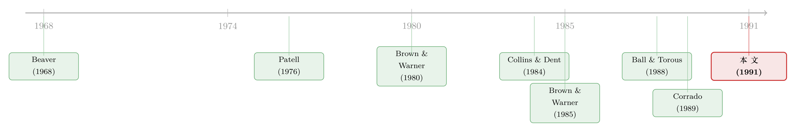

你的 t 值在撒谎：当事件本身把方差吹大了
本文读的是 Boehmer, Masumeci & Poulsen (1991, JFE)：当一个事件不只是平移了股票的平均收益、还顺手把收益的方差吹大时，金融学里最常用的那几个事件研究检验会频繁地把「其实没有异常收益」误判成「有」；作者提出一个把 Patell 标准化与横截面方差缝在一起的「标准化横截面检验」，在零假设为真时拒绝率回到正常，在零假设为假时又几乎和传统检验一样有力。
1 一个会撒谎的 t 值
先讲一个让人脊背发凉的场景。
你做了一个事件研究：挑了一批公司，找到它们发生某件大事的那一天（公告、回购、并购……），按 Brown 和 Warner 的标准流程估出每只股票的「异常收益（abnormal return）」，再把它们加总、除以一个标准误，得到一个漂亮的 t 值。t 值很大，于是你长舒一口气，在论文里写下「事件带来了显著的正异常收益」。
可问题是——这个 t 值可能在骗你。
它骗你的方式很隐蔽。你以为自己在检验「平均异常收益是不是零」，而你真正在做的，是拿事件期的收益去比一把在平静日子里量出来的尺子（估计期的残差方差）。倘若这件大事除了挪动平均收益，还顺带把当天收益的离散程度搅大了，那么这把尺子就太短了：分母被低估，t 值被人为顶高，于是你在「明明什么都没发生」的时候，照样能拒绝零假设。
这正是 Boehmer、Masumeci 和 Poulsen 这篇 1991 年 JFE 论文要对付的幽灵，他们给它起了个名字：事件诱发方差（event-induced variance）。
这里的「方差」不是指你没控制好横截面上公司之间的异质性而测出的虚假离散。即便事件对每家公司的真实影响完全相同，只要事件本身让收益的随机性变大，问题就存在。Brown、Harlow 和 Tinic（1988, 1989）已经记录过：很多事件会让个股的风险与收益同时变化，表现为异常收益方差的一次暂时性抬升。
2 为什么这件事「自然」会发生
接着，一个自然的问题是：方差变大，难道不是因为研究者没把公司之间的差异控制干净吗？
部分是。如果你不去区分「身处收购战中的公司采用毒丸」和「内部人持股 75% 的公司采用毒丸」，那么事件日横截面上的离散度当然会变大——但那是异质效应冒充的方差。早在二十多年前，Beaver（1968）就指出：盈余公告日横截面离散度的上升，本身就意味着公告传递了信息。
但论文真正想说的是另一半：哪怕你把异质性控制得再干净，事件本身仍可能注入一份纯粹的随机性。Dann（1981）研究股票回购时报告过一个触目惊心的数字——事件期横截面标准差比估计期大了约 3.625 倍。这种放大，不是你建模能消掉的，它是事件的一部分。
于是，常用的检验就站在了一个尴尬的位置上：它们的分母，来自事件之前那段安静的估计期；可它们要检验的对象，活在方差已经被吹大的事件期。尺子和被量的东西，根本不在一个刻度上。
3 已有的几把尺子，各有各的盲区
然后，我们来盘点一下作者拿来同台竞技的六种检验。理解它们各自「漏在哪儿」，才能看懂第六种为什么赢。
第一把：传统检验（traditional test）。 即 Brown-Warner（1980）的「无依赖调整」法。统计量是事件期异常收益之和，除以所有股票估计期残差方差之和的平方根：
$$ t_{\text{trad}} = \frac{\sum_{i=1}^{N} A_{i,0}}{\sqrt{\sum_{i=1}^{N} s_i^2}} $$
它隐含假设了两件事：残差互不相关，且事件诱发方差可以忽略。第二个假设一旦破裂，分母系统性偏小。
第二把：标准化残差检验（standardized-residual test）。 即 Patell（1976）法，Brown-Warner（1985）也在用。它的聪明之处在于，先把每只股票的事件期残差，用它自己的估计期标准差（并做预测误差修正）标准化，再加总：
$$ SR_{i} = \frac{A_{i,0}}{S_i}, \qquad S_i = s_i\sqrt{\,1 + \frac{1}{T_i} + \frac{(R_{m,0}-\bar R_m)^2}{\sum_{t=1}^{T_i}(R_{m,t}-\bar R_m)^2}\,} $$
这一步做对了两件事：一是修正了「事件期残差是样本外预测，方差天然更大」的问题（那个 \(1+\tfrac{1}{T_i}+\cdots\) 的修正项）；二是防止个别高方差股票主导整个检验。标准化后的 \(SR_i\) 近似单位正态，统计量约等于 \(\sum SR_i / \sqrt{N}\)。但是——它仍然假设事件诱发方差不重要。它修正的是「样本外」与「异方差」，不是「事件把方差吹大了」。
第三把：符号检验（sign test）。 数事件期正收益的比例减 0.5，再除以二项分布标准差。它常被用来佐证「结果不是几只股票带歪的」。但它假设 50% 的收益为负，而真实收益是右偏的（Fama 1976；Brown-Warner 1980）。
第四把：普通横截面检验（ordinary cross-sectional test）。 这把尺子换了思路：干脆不用估计期方差，而用事件期当天的横截面标准误来做 t 检验。它的好处是不要求事件诱发方差为零；它的硬伤是，一旦不同公司的事件期残差来自不同的分布，它就被错误设定（misspecified）了。
第五把：矩估计检验（method-of-moments）。 Froot（1989）的估计量，允许残差同期相关、异方差，代价是要把公司分成「组间独立」的若干组（作者按一位 SIC 行业码分组）。先算每个行业的平均残差，标准化成「标准化行业残差（SIR）」，再加总除以行业数的平方根。代价是：组太粗、信息利用不充分，功效偏低。
读到这里你大概已经嗅到了那个真正关键的一步。
4 把两把尺子缝在一起
普通横截面检验的优点，恰好是标准化残差检验的盲区（它允许方差变化）；而标准化残差检验的优点，又恰好补上普通横截面检验的短板（它用上了估计期的信息、且不让大方差股票称霸）。
那为什么不把两者缝起来？
这就是论文的核心贡献——标准化横截面检验（standardized cross-sectional test）。它分两步走：
第一步，像 Patell 那样，把每只股票的残差用其估计期标准差（修正预测误差后）标准化，得到 \(SR_i\)，先消除普通横截面检验的「分布不同」错误设定问题；
第二步，再对这批标准化后的 \(SR_i\) 施加普通横截面的做法——用它们当期的横截面标准误当分母。
落成公式，就是下面这个后来被无数事件研究奉为标配、人称 BMP 统计量的东西：
把它和前几把尺子对照，妙处一目了然：分子里的 \(SR_i\) 已经做过 Patell 标准化，所以没有大方差个股称霸的问题（继承了第二把尺子的优点）；而分母不再是估计期那段安静日子的方差，而是事件期当天横截面上算出来的离散度——事件把方差吹多大，这个分母就跟着鼓多大（继承了第四把尺子的优点）。于是「分母太短」的病根被拔掉了。
作者也点明：这个统计量其实是 Ball 和 Torous（1988）极大似然估计量的一个特例——当事件以概率 1 在某天发生、且事件诱发方差正比于个股估计期方差时，Ball-Torous 里的标准化收益是独立同分布的正态，此时 MLE 与之重合。换句话说，BMP 是把一个很一般、但难实现的估计量，「蒸馏」成了一行人人都算得出来的公式。这一点，颇有几分把复杂模型化作查找表的味道（可参见《把结构模型「蒸馏」成一张查找表：深度代理与期权定价》中类似的「化繁为简」思路）。
5 实验台：250 个投资组合的「压力测试」
但真正关键的一步，是怎么证明这把新尺子既准又有力。作者的办法是蒙特卡洛模拟（Monte Carlo simulation）。
数据来自 1987 年版 CRSP 日收益文件（涵盖 1962 年 7 月至 1987 年 12 月）。他们构造了 250 个投资组合，每个 50 只证券，证券与事件日都是带放回随机抽取的，且剔除 1987 年的事件日（避开当年下半年的剧烈波动）。入选条件：估计期（$-249$ 到 $-11$）至少 50 个日收益，事件窗（$-19$ 到 $+10$）这 30 天无缺失。
然后人为地往事件日「注射」两样东西：一个常数异常收益 \(\mu\)，和一份事件诱发方差。后者的强度用 \(k\) 来刻度——事件诱发方差是估计期方差的 \(k\) 倍。作者特意分了两种情形：方差增量正比于个股估计期方差（Panel A），或正比于组合平均估计期方差（Panel B）。Dann（1981）那个 3.625 倍的极端值，大约对应 \(k\approx 11\)。
先看一个「定标」结果：当没有事件诱发方差时（\(k=0\)），各检验的表现应当回到经典水准。果然——单尾 \(\alpha=0.05\)、零异常收益时，标准化残差法拒绝 7.2%（Brown-Warner 1985 的对应数字是 6.4%）；异常收益为 1% 时，它拒绝 96%（Brown-Warner 是 97.6%）。尺子校准无误。
6 反转：当方差被吹大的那一刻
于是反转出现了。
把 \(k\) 拧上去、同时让真实异常收益为零，灾难立刻显形。论文写道：即便 \(k_i\) 只有 0.5（事件诱发方差只是估计期方差的一半），传统法和标准化残差法拒绝零假设的频率，竟是它们应有水平的 2.2 到 6.4 倍。也就是说，在「什么都没发生」的世界里，这两把最常用的尺子有时会以六倍于名义显著性水平的频率，喊出「显著」。普通横截面法和符号检验则大体守住了正确的拒绝率——因为它们要么用了事件期方差，要么本就不靠正态方差。
那么代价呢？一把不乱喊「狼来了」的尺子，会不会在真有狼时也喊不出声？这正是检验功效（power）的问题，也是 BMP 统计量必须证明自己的地方。
当真实异常收益为 1%、方差增量正比于个股方差（双尾 \(\alpha=0.05\)）时：标准化横截面检验在 \(k_i=0.5\) 时拒绝 81.6%、\(k_i=1\) 时拒绝 70.1%；而传统法对应只有 69.6% 和 61.6%。注意这个细节——在较低的事件诱发方差下，新检验不仅比普通横截面法和符号检验更有力，甚至比传统法还要有力。它没有用「准」去换「力」。
当异常收益升到 2% 时，传统法、标准化残差法和标准化横截面法在双尾 \(\alpha=0.05\) 下几乎都是 100% 拒绝；矩估计法则是六者中功效最差的那一个。
一句话总结这场压力测试：传统法和标准化残差法，在零假设为真时拒绝得太多（size 失控）；矩估计法，在零假设为假时拒绝得太少（power 不足）；唯有标准化横截面检验，两头都站住了。 更难得的是，作者补充说，把它用到存在事件日聚集（event-date clustering）的组合上时，size 与 power 都不受影响。
7 文献脉络
把这条线捋一捋，故事其实很清晰。
最初，是 Beaver（1968）发现盈余公告会抬高横截面离散度——这是「方差会随事件变化」的最早自觉。接着，事件研究的方法学骨架由 Brown 和 Warner（1980, 1985）搭起，他们的「传统法」成了行业标准，却把事件诱发方差按下不表。与此同时，Patell（1976）从另一个方向贡献了「标准化残差」，解决了样本外预测与异方差，却也默认方差不随事件变。
然后，一批人开始正面进攻这个幽灵：Christie（1983）提出在多事件下估计方差；Collins 和 Dent（1984）用模拟证明在事件日聚集时 GLS 优于 OLS；Ball 和 Torous（1988）祭出极大似然，同时估计事件期收益、方差与事件发生概率；Corrado（1989）则走非参数路线，用秩检验绕开正态假设。Froot（1989）的矩估计提供了允许相关与异方差的协方差矩阵。

本文（1991）的位置，是在这堆「各显神通」的方案里，挑出一条最易实现、又两头都站得住的路：不需要多事件、不需要解似然、不需要非参数排序，只要把 Patell 标准化和横截面方差缝在一起。也正因为「易实现」，它后来成了事件研究的事实标准。这条「给事件研究挑尺子」的传统至今未绝（可参见《纳斯达克的收益里藏着「假阳性」——一篇给事件研究挑尺子的论文》，以及更晚近的《事件研究里的「假阳性」：当一根 t 值不再等于因果》）。
8 评论与延伸（Q&A + 研究方向）
(a) 几个可能的疑问
Q：事件诱发方差，和「我没控制好公司异质性」造成的虚假离散，到底差在哪？
差在「能不能被建模消掉」。异质效应是结构性的——毒丸对收购战中的公司和对内部人控股公司影响不同，你把这些协变量放进模型就能控制。事件诱发方差是纯随机性的抬升：哪怕事件对每家公司的真实影响完全相同（i.i.d. 情形），方差照样变大，无法靠加协变量消除。论文明确说，它不讨论方差变大的成因，只论证「必须控制它，才能得到对零假设的恰当检验」。
Q：既然普通横截面检验也用事件期方差、也守住了 size，为什么不直接用它？
因为它在零假设为假时功效偏低，而且当不同公司的事件期残差来自不同分布时会被错误设定。BMP 的第一步标准化，正是为了修掉这个错误设定；标准化之后，大方差个股不再主导，横截面标准误才量得准。所以 BMP 不是普通横截面法的替代品，而是它的「打了补丁的升级版」。
Q：标准化残差法（Patell）不是已经做了方差修正吗，为什么还会失灵？
Patell 修正的是「样本外预测方差更大」和「个股异方差」这两件事，用的仍是估计期的标准差。它从未假设事件本身会改变方差。一旦事件把事件日的方差吹大，Patell 的分母（来自估计期）依然系统性偏小，于是照样过度拒绝。
Q：为什么矩估计法（Froot）功效那么差？
因为它要求把公司分成组间独立的若干组，作者按一位 SIC 行业码分，平均每个 50 只的组合只有约 7 个行业。它先把每个行业内部的信息压成一个「标准化行业残差」，再用这 7 个数做检验——信息被严重粗化，自由度太低，功效自然上不去。它换来的是允许组内相关，但在这个模拟设定里这份代价不划算。
Q：这套方法依赖正态分布吗？股票收益明明右偏。
BMP 的渐近正态性依赖 \(SR_i\) 近似单位正态。但作者的模拟里异常收益是从正态抽的，所以这是「自家主场」。面对真实数据的偏度与厚尾，Corrado（1989）的非参数秩检验是另一条更稳健的路。两者其实是互补的：BMP 易算且高效，秩检验对分布假设更不敏感。
Q：把它用到「同一天发生事件」的样本（事件日聚集）上还成立吗？
作者专门测了，结论是size 和 power 都不受影响。但要注意，所有检验（包括 BMP）都仍假设证券残差在横截面上不相关。若聚集还伴随强烈的横截面相关，那是另一层问题，需要 Collins-Dent 式的 GLS 或 Froot 式的分组来对付。
(b) 几个可能的研究问题与提案
1. 公司债事件研究里的「事件诱发方差」
【经济故事】事件研究的方法学几乎都长在股票市场上，可信用市场的「方差」行为很不一样：评级下调、违约、流动性枯竭往往同时抬高收益的均值漂移和方差，而且债券的厚尾、非交易、价格陈旧更严重。把 BMP 直接搬过来，分母可能被陈旧价格压扁，反而过度拒绝。 【可行性】中。需要 TRACE 成交数据 + 同发行人多债券。识别策略：构造一个公司债版的蒙特卡洛，注入均值与方差冲击，比较 BMP、秩检验与基于成交量调整的标准误。诚实地说，债券的非同步交易会让「事件期横截面方差」本身含噪，是真正的难点。
2. 外资持有人冲击下的横截面方差结构
【经济故事】当一项政策同时改变多国、多公司的外资可投资度时，事件不只是平移了收益，还可能因为「谁被外资青睐」的差异而吹大横截面方差。此时用 BMP 检验「外资进入是否有异常收益」，size 是否还守得住？ 【可行性】中。需要跨国可投资度（investability）面板 + 事件日。可借鉴外资研究里已有的识别（如可投资度的离散变动），先做模拟标定，再上实证。
3. 当事件日聚集 + 横截面相关同时存在
【经济故事】BMP 假设残差横截面不相关。可现实里，宏观事件（央行公告、危机日）既聚集又高度相关。一个自然问题：在「方差被吹大 + 强横截面相关」的双重污染下，BMP、Collins-Dent 的 GLS、Froot 的分组三者，谁的 size-power 前沿最优？ 【可行性】高。纯模拟即可完成，不需新数据，是一篇干净的方法学论文。把 \(k\) 与相关系数 \(\rho\) 拉成一张二维网格，画出各检验的拒绝率曲面。
4. 非参数与参数的「缝合」
【经济故事】BMP 把 Patell 与横截面方差缝在一起；那能不能把 Corrado 的秩 + 横截面标准误也缝起来，得到一个「既稳健于偏度、又稳健于事件诱发方差」的检验？ 【可行性】高。理论上直接，模拟验证也不难。风险在于：秩变换后再算横截面标准误，统计量的渐近分布需要重新推导，可能没有漂亮的闭式。
9 我的判断
先说贡献。这篇论文的分量，不在数学的精巧——它的统计量简单到一行就能写完——而在于它精准地诊断出了一个普遍却隐蔽的错误，并给出了一个所有人都用得起的处方。事件研究是实证金融最常用的工具之一，而「事件诱发方差导致过度拒绝」这件事，在 1991 年之前是被广泛忽视的。BMP 把它摆上台面，又用 250 组模拟把六种方法的 size 与 power 一一对账，最后留下一把既准又有力的尺子。它后来成为事件研究标配，实至名归。
再说对识别（这里更准确地说是「对模拟设计」）的担忧。第一，所有结论都建立在收益正态的模拟世界里——这是 BMP 的主场，对真实数据的偏度与厚尾，它未必同样稳健，这也正是 Corrado 路线存在的理由。第二，全篇假设残差横截面不相关；现实中宏观事件的强相关会让这个前提破裂，而论文只检验了「聚集但不相关」的情形。第三，模拟里事件诱发方差与估计期方差之比被设成常数 \(k\)，真实世界的方差冲击恐怕更不规则。
后续我最想看到的，是把这套压力测试搬到公司债与信用市场：那里非同步交易、价格陈旧、厚尾更极端，「事件期横截面方差」本身就含噪，BMP 的分母会不会反而被噪声顶高、走向另一个方向的误判？这是一个既有现实意义、又有干净模拟设计的问题。
参考文献
Ball, Clifford and Walter Torous (1988). Investigating security price performance in the presence of event-date uncertainty. Journal of Financial Economics 22, 113–154.
Beaver, William H. (1968). The information content of annual earnings announcements. Empirical Research in Accounting: Selected Studies, Supplement to the Journal of Accounting Research, 67–92.
Boehmer, Ekkehart, Jim Masumeci and Annette B. Poulsen (1991). Event-study methodology under conditions of event-induced variance. Journal of Financial Economics 30(2), 253–272.
Brown, Keith, W.V. Harlow and Seha M. Tinic (1988). Risk aversion, uncertain information, and market efficiency. Journal of Financial Economics 22, 355–385.
Brown, Stephen and Jerold Warner (1980). Measuring security price performance. Journal of Financial Economics 8, 205–258.
Brown, Stephen and Jerold Warner (1985). Using daily stock returns: The case of event studies. Journal of Financial Economics 14, 3–31.
Christie, Andrew (1983). On information arrival and hypothesis testing in event studies. Working paper, University of Rochester.
Collins, Daniel W. and Warren T. Dent (1984). A comparison of alternative testing models used in capital market research. Journal of Accounting Research 22, 48–84.
Corrado, Charles J. (1989). A nonparametric test for abnormal security price performance in event studies. Journal of Financial Economics 23, 385–395.
Dann, Larry (1981). Common stock repurchases: An analysis of returns to bondholders and stockholders. Journal of Financial Economics 9, 113–138.
Fama, Eugene F. (1976). Foundations of Finance. Basic Books, New York.
Froot, Kenneth (1989). Consistent covariance matrix estimation with cross-sectional dependence and heteroskedasticity in financial data. Journal of Financial and Quantitative Analysis 24, 333–355.
Patell, James (1976). Corporate forecasts of earnings per share and stock price behavior: Empirical tests. Journal of Accounting Research 14, 246–276.